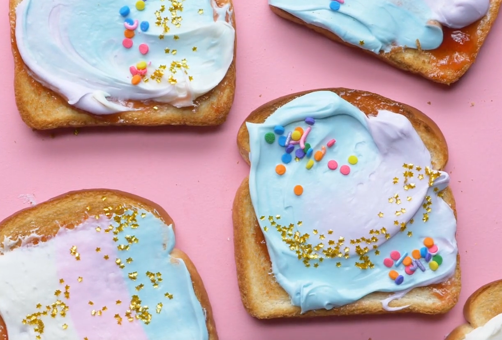

Princess Toast
"I made these sparkly treats for my daughter's Brownie troop and they're
great for princess parties. Sometimes I use lemon curd in place of the
jam" -Marina Castle Kelley, Canyon Country, California

Ingredients
- 6 slices white bread, toasted
- 6 tablespoons sprinkles
- 6 tablespoons seedless strawberry jam
- 6 teaspoons silver or gold edible glitter
- 1-1/2 cups buttercream frosting
Directions
-
Spread jam over toast. Top with buttercream, sprinkles and edible
glitter. Leave toasts whole or cut into shapes.
Return